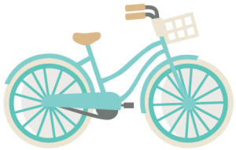
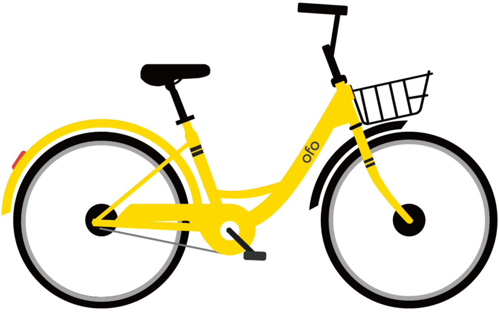

<nz-layout class="app">
    <nz-header class="header" style="text-align: left;">
        
        <ul nz-menu [nzMode]="'horizontal'" nzTheme='dark' class="menu">
            <li nz-menu-item class="navbar-brand">
                <span class="menu-title">Home</span>
                <a routerLink="/home" routerLinkActive="active"></a>
            </li>
            <li nz-menu-item class="navbar-brand">
                <span class="menu-title">Stations Map</span>
                <a routerLink="/map" routerLinkActive="active"></a>
            </li>
            <li nz-submenu class="navbar-brand">
                <span title class="menu-title">Stations Analysis</span>
                <a routerLink="/analysis" routerLinkActive="active"></a>
                <ul>
                    <li nz-menu-item>
                        <span>Infrastructure Effect</span>
                        <a routerLink="/analysis/infrastructure" routerLinkActive="active"></a>
                    </li>
                    <li nz-menu-item>
                        <span>Age Effect</span>
                        <a routerLink="/analysis/age" routerLinkActive="active"></a>
                    </li>
                    <li nz-menu-item>
                        <span>Weather Effect</span>
                        <a routerLink="/analysis/weather" routerLinkActive="active"></a>
                    </li>
                </ul>

            </li>
            <li nz-menu-item class="navbar-brand">
                <span class="menu-title">About us</span>
                <a routerLink="/about" routerLinkActive="active"></a>
            </li>
            <li nz-menu-item class="navbar-brand">
                <span class="menu-title">Github</span>
                <a href="https://github.com/INF554Fall18/project-journey-to-the-west" target="_blank" rel="noopener noreferrer"></a>
            </li>
        </ul>
    </nz-header>

    <!-- <header class="navbar navbar-default row" role="navigation">
        <nav class="navbar-header">
            
            <h1 class="App-title">New York Sharing Bike</h1>
            <a class="navbar-brand" routerLink="/map" routerLinkActive="active">Map</a>
            <a class="navbar-brand" routerLink="/analysis" routerLinkActive="active">Other</a>
        </nav>
    </header> -->
    <nz-content class="main">
        <router-outlet></router-outlet>
    </nz-content>
    
    <nz-footer style="text-align: center;bottom: 0;">©2018 Journey to the west</nz-footer>
</nz-layout>